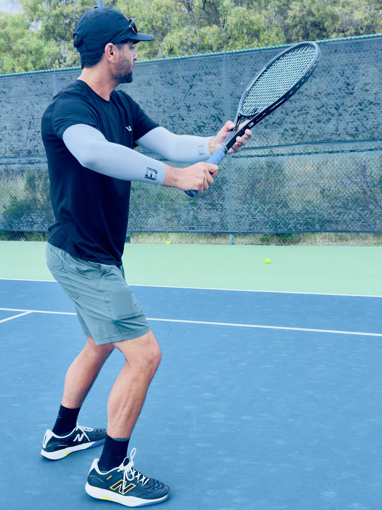
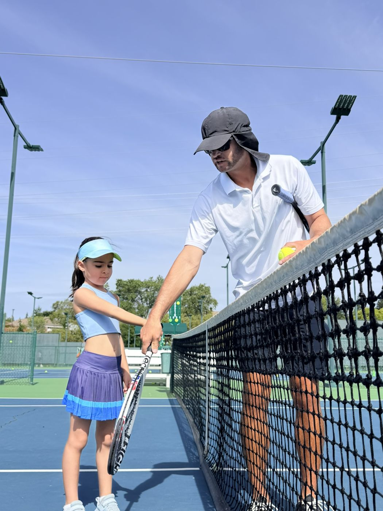
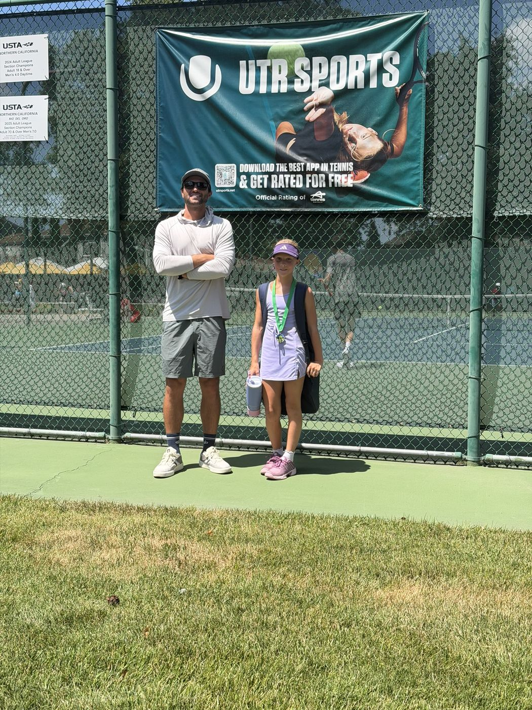

My Story
I was the number one junior in Texas, then a Division I player at Texas A&M, and I have spent the fifteen years since teaching the game to everyone from first timers to ranked tournament players. That is the eye I bring to your video.
The Player
Junior tennis was my first real education. I finished ranked number one in Texas in boys 12s, 14s, and 16s, top ten nationally in all three, and climbed to the top 220 in the ITF junior world rankings. Those years were built out of five in the morning wake ups, long drives to tournaments, and matches that came down to two or three points.
I signed with Texas A&M as a blue chip recruit, later adjusted to five star after I graduated high school early, and played four seasons under head coach Steve Denton from 2007 to 2011. Our team finished ranked number four in the country in 2010 and won the Big 12 team title in 2011.
College is where the game actually taught me something. How to compete when your legs are gone. How to play for four other guys instead of yourself. How to build a game that still holds together on the day your best shot goes missing. I still compete, and I am still sponsored by HEAD.

The Coach
I started teaching young and never stopped. As Junior Tennis Director at Lifetime Athletics I was running twenty plus hours of private lessons a week on top of twenty plus hours of camps, building high performing juniors from the ground up. Since then I have coached at Gleneagles Country Club, run sanctioned USTA High Performance camps, and spent nearly three years as the tennis professional at Broadstone Sports Club running adult clinic programming and junior development side by side.
I also went back to Texas A&M as a volunteer coach with the men's team. Sitting in the coaching chair at a program I had played for changed how I see the game. You stop watching the ball and start watching the player.
My approach is not complicated. I am not going to rebuild your stroke because a textbook says the grip is wrong. I find the two or three things actually costing you points and we fix those first. Clean contact, balanced footwork, shot selection that fits the moment. My degree is in psychology, which matters more than people expect once the score gets tight and technique stops being the problem.

Behind the Camera
I run @coachkayvon across Instagram and YouTube, breaking down technique using footage of the best players in the world and turning it into one thing you can actually use in your next match. One cue, one fix, no filler.
I have shot at the Miami Open and the Australian Open as a credentialed content creator, filming pros from angles most people never get to stand in. Studying elite technique frame by frame for a living is not a side hobby to the coaching. It is the exact same skill I point at your video.
Look closely. Find the thing that matters. Say it in plain language. That is the whole job, on court and off.

Send me a video and I will show you exactly what is happening. Forty dollars, breakdown back within 48 hours.